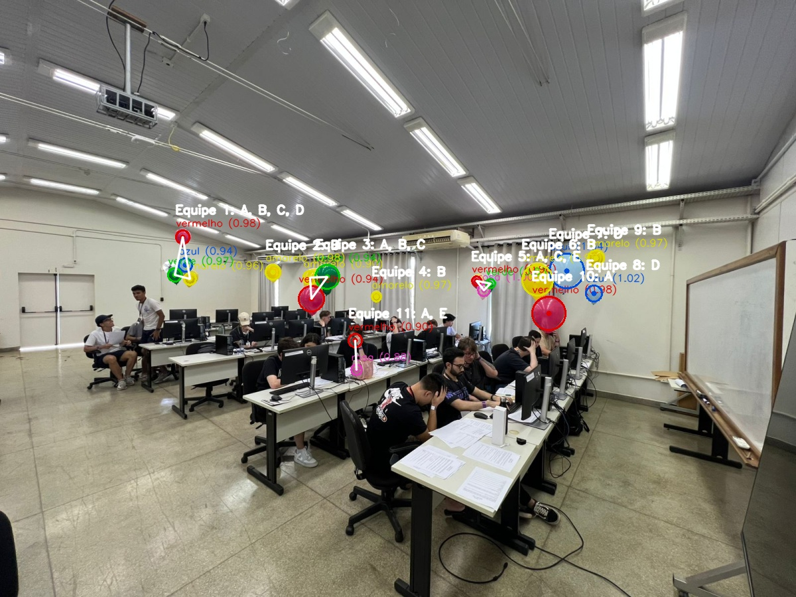
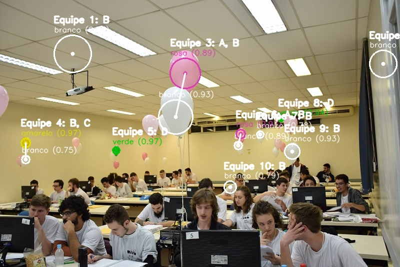
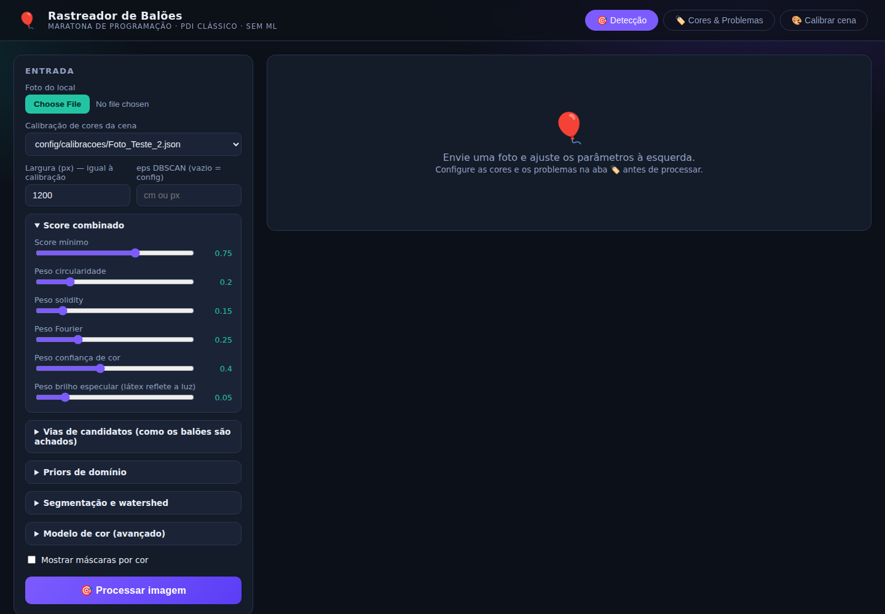
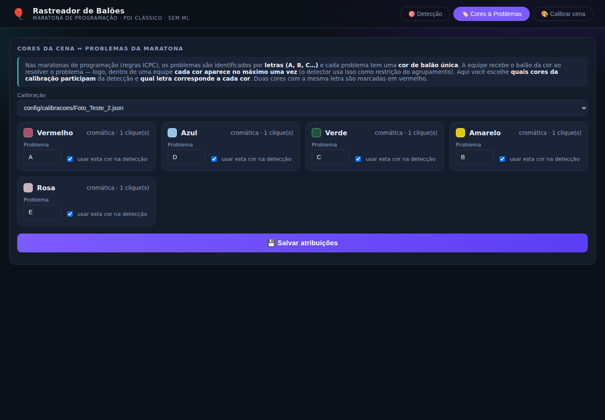

Identifica quais problemas cada equipe de uma maratona de programação resolveu, a partir de uma única câmera. Cada cor de balão é um problema. 100% processamento digital de imagens clássico, sem machine learning.
🚀 Testar no navegador, sem instalar nada
O pipeline Python roda no seu navegador via WebAssembly (Pyodide + OpenCV).
Detecções sobre as imagens de teste: círculo e rótulo por balão, casco convexo por equipe com as letras dos problemas resolvidos.


Aplicação web local (Flask): todos os parâmetros do pipeline são ajustáveis, as cores são calibradas clicando nos balões direto no navegador, e cada cor recebe a letra do problema da maratona.


Pipeline em 7 etapas, com três vias independentes de geração de candidatos: detectores fracos diferentes falham em lugares diferentes.
Shades-of-Gray (norma de Minkowski p=6) com ganhos limitados + CLAHE: câmeras e iluminações diferentes viram imagens parecidas.
O operador clica em 1+ balão de cada cor na foto do próprio local; os modelos (matiz circular, percentis S/V/L, croma a-b) nascem da cena; não existe configuração universal. Cores acromáticas (branco) são detectadas e modeladas por brilho + croma.
Amáscaras de cor + watershed · Bcírculos ajustados a arcos de borda (Canny → Kåsa) para oclusão parcial · CMSER no canal de saturação.
circularidade + solidity + energia de Fourier + confiança de cor + brilho especular, num limiar único, um balão ocluído com cor perfeita sobrevive à circularidade baixa.
4 cliques num retângulo conhecido retificam os centroides para coordenadas métricas, e um único raio de agrupamento vale para todas as fileiras.
Agrupamento por densidade com a restrição de unicidade: cada equipe tem no máximo um balão por cor. Cluster violador é re-separado; duplicata inseparável é falso positivo por construção.
Placar equipes × problemas (letras A–Z), cores mapeadas para problemas, JSON estruturado + overlay anotado.
Avaliação automática contra gabarito anotado (posição + cor): cada mudança de parâmetro é validada contra todas as cenas de uma vez.
| Imagem | Pipeline inicial | 1ª geração | 2ª geração |
|---|---|---|---|
| Foto_Teste_2 (19 balões) | 16 (84%) | 18 (95%) | 19 (100%) |
| Teste_3 (25 balões) | 10 (40%)* | 11 (44%) | 15 (60%) |
| Global | 59% | 66% | 77% |
* contava balões brancos rotulados como "amarelo" e um "azul" inexistente.
O GitHub Pages hospeda esta vitrine; a aplicação interativa roda na sua máquina (Python 3.10–3.12):
# clonar e instalar git clone https://github.com/AngelV-c/Processamento-de-imagens.git cd Processamento-de-imagens/baloes_v2 python -m pip install -r requirements.txt # interface web → http://localhost:5000 python app.py # ou pela linha de comando, com as calibrações de exemplo python main.py --imagem Foto_Teste_2.jpeg --calibracao config/calibracoes/Foto_Teste_2.json --eps 68 # avaliação automática contra o gabarito python tools/avaliar.py
Detalhes de arquitetura, decisões e fontes da pesquisa: ARQUITETURA.md · Código: github.com/AngelV-c/Processamento-de-imagens